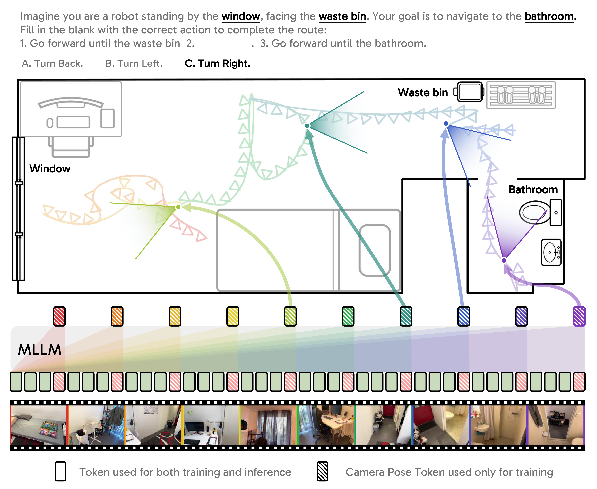
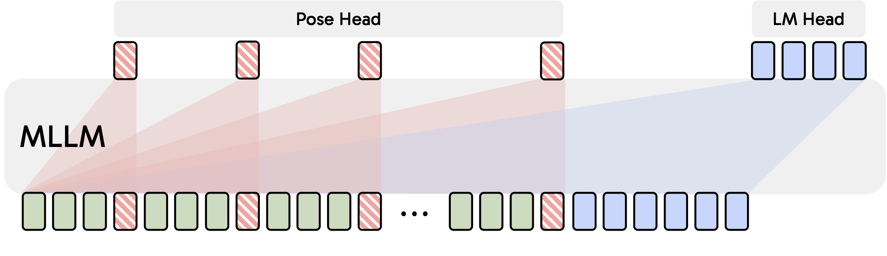
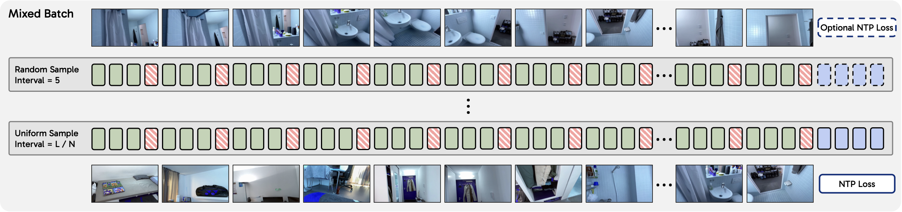
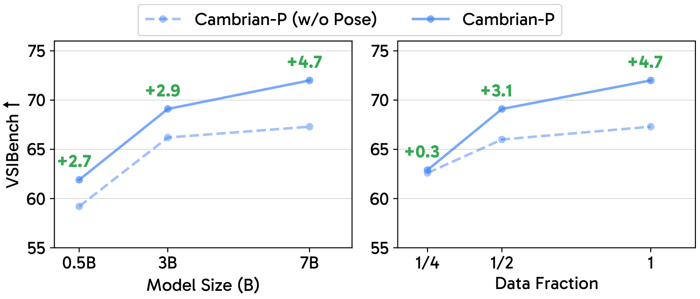
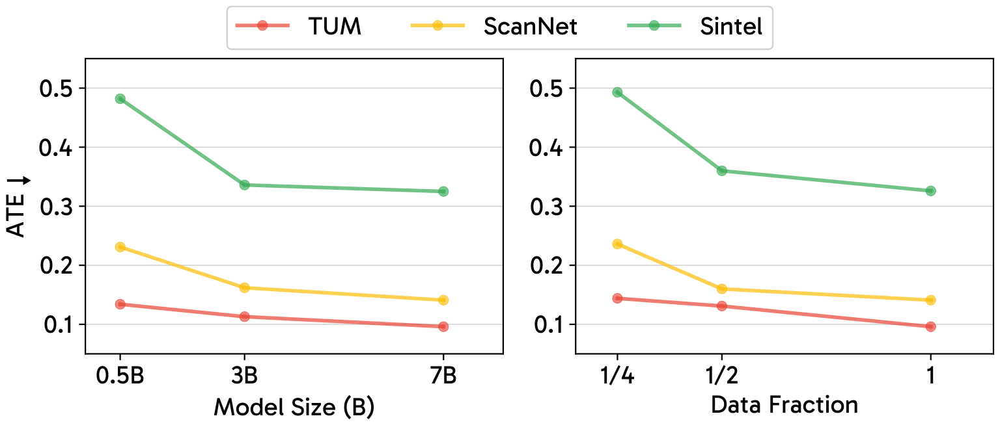
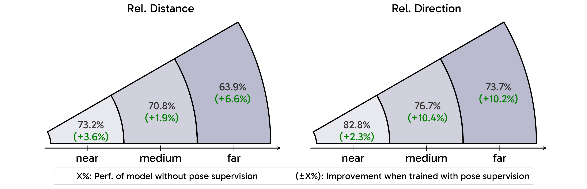
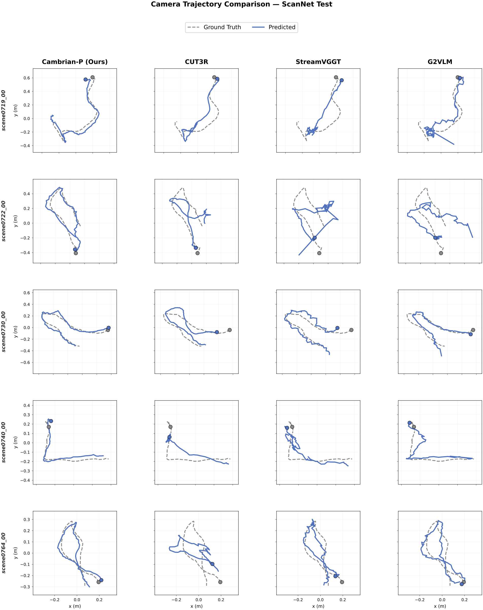

Camera pose matters. The position and orientation of each viewpoint define a shared spatial coordinate frame that relates observations across video frames. Yet this signal is largely absent from multimodal LLMs (MLLMs) for video understanding, which process frames as isolated 2D snapshots, instead of the persistent scene humans perceive. We revisit pose as a lightweight supervisory signal and introduce Cambrian-P, a video MLLM augmented with per-frame learnable camera tokens and a pose regression head. With a carefully designed sampling scheme, the model achieves substantial gains of 4.5–6.5% on spatial reasoning benchmarks such as VSI-Bench, generalizes across eight additional spatial and general video QA benchmarks, and, as a byproduct, achieves state-of-the-art streaming pose estimation on ScanNet. Surprisingly, training on pseudo-annotated poses from in-the-wild video further improves general video QA benchmarks, showing pose helps beyond spatial reasoning. Together, these results position camera pose as a fundamental signal for video models that reason about the physical world.
Click any icon to jump to the corresponding section.
Why pose? Video is the 2D observation of a dynamic 3D scene from a coherent sequence of viewpoints. Each viewpoint is defined by an observer's pose, i.e., its 3D position and orientation, specifying how the camera is embedded in the physical world. Pose is the lightest 3D signal: it compactly encodes how views relate geometrically, enforces global consistency through rigid-body constraints, and disentangles camera motion from scene dynamics. Camera pose is not merely a useful auxiliary cue, but a foundational inductive bias for spatially aware video understanding.

Architecture. Cambrian-P builds on the Cambrian-S backbone (SigLIP2-SO400m vision encoder + Qwen2.5 LLM). To enable pose estimation inside the LLM's feature space, we introduce two learnable camera tokens, c_first and c_rest, appended after the visual tokens of each frame. After the LLM forward pass, a linear projector and a four-layer self-attention head regress a 9-D pose encoding (translation, quaternion, horizontal and vertical field-of-view) for every frame, with all poses expressed in the coordinate system of the first camera.
Training objective. The total loss combines next-token prediction with a pose regression loss. The pose loss is a weighted L1 over translation, quaternion rotation, and field-of-view. Translation is normalized by the average consecutive-frame distance \( \bar d \) so that indoor and outdoor scenes contribute comparable gradients, and a stop-gradient least-squares scale aligns predictions to ground truth on non-metric datasets.

L is the total number of frames in the video.
Bridging the training-dynamics gap. VQA and pose estimation have conflicting needs: VQA prefers uniform temporal sampling and minimal augmentation, while pose estimation prefers random starts, variable intervals, and heavy augmentation. We resolve this with two ingredients:
Cambrian-P is fine-tuned from Cambrian-S-7B (stage 3) on VSI-590K and yields state-of-the-art performance on VSI-Bench. Compared to its no-pose counterpart, it gains +4.5% on VSI-Bench, with the largest improvements on tasks that demand global spatial understanding such as absolute distance, relative direction, and route planning.
| Model | LM | Avg. | Numerical Answer | Multiple-Choice Answer | ||||||
|---|---|---|---|---|---|---|---|---|---|---|
| Obj. Count | Abs. Dist. | Obj. Size | Room Size | Rel. Dist. | Rel. Dir. | Route Plan | Appr. Order | |||
| General-purpose Models | ||||||||||
| GPT-4o | Unk. | 34.0 | 46.2 | 5.3 | 43.8 | 38.2 | 37.0 | 41.3 | 31.5 | 28.5 |
| Gemini-2.5 Pro | Unk. | 51.5 | 43.8 | 34.9 | 64.3 | 42.8 | 61.1 | 47.8 | 45.9 | 71.3 |
| Qwen2.5VL-7B | Qwen2.5-7B | 29.3 | 25.2 | 10.5 | 36.4 | 29.6 | 38.4 | 38.0 | 29.8 | 26.8 |
| InternVL-3 8B | Qwen2.5-7B | 42.1 | 68.1 | 39.0 | 48.4 | 33.6 | 48.3 | 36.4 | 27.3 | 35.4 |
| InternVL-3.5 8B | Qwen3-8B | 56.3 | – | – | – | – | – | – | – | – |
| Qwen3-VL 8B | Qwen3-8B | 56.6 | – | – | – | – | – | – | – | – |
| Spatial-specialist Models | ||||||||||
| VST 7B | Qwen2.5-7B | 61.2 | 71.6 | 43.8 | 75.5 | 69.2 | 60.0 | 55.6 | 44.3 | 69.2 |
| VLM-3R 7B | Qwen2-7B | 60.9 | 70.2 | 49.4 | 69.2 | 67.1 | 65.4 | 80.5 | 45.4 | 40.1 |
| VG-LLM 8B | Qwen2.5-7B | 50.7 | 67.9 | 37.7 | 58.6 | 62.0 | 46.6 | 40.7 | 32.4 | 59.2 |
| Cambrian-S 7B | Qwen2.5-7B | 67.5 | 73.2 | 50.5 | 74.9 | 72.2 | 71.1 | 76.2 | 41.8 | 80.1 |
| SenseNova-SI 8B | Qwen2.5-7B | 68.7 | – | – | – | – | – | – | – | – |
| GeoThinker 7B | Qwen2.5-7B | 68.5 | – | – | – | – | – | – | – | – |
| GeoThinker 8B | Qwen3-8B | 72.6 | – | – | – | – | – | – | – | – |
| Cambrian-S-7B† | Qwen2.5-7B | 69.2 | 73.6 | 53.7 | 75.2 | 74.7 | 71.5 | 82.0 | 38.7 | 84.3 |
| Cambrian-P | Qwen2.5-7B | 73.7 | 74.9 | 60.1 | 76.0 | 76.9 | 74.8 | 89.5 | 52.6 | 85.0 |
We further fine-tune Cambrian-P on VSI-590K + VLM-3R data and evaluate on VSTemporalI-Bench, which probes camera-motion understanding. Pose supervision yields a +20% jump on the camera-movement-direction subtask over the no-pose baseline.
| Method | Avg. | Cam-Obj Abs. Dist. | Cam. Displace. | Cam. Mov. Dir. | Obj-Obj Rel. Pos. | Cam-Obj Rel. Dist. |
|---|---|---|---|---|---|---|
| GPT-4o | 38.2 | 29.5 | 23.4 | 37.3 | 58.1 | 42.5 |
| Gemini-1.5 Flash | 32.1 | 28.5 | 20.9 | 24.4 | 52.6 | 33.9 |
| LLaVA-NeXT-Video-72B | 44.0 | 32.3 | 10.5 | 48.1 | 78.3 | 50.9 |
| VLM-3R-7B | 58.8 | 39.4 | 39.6 | 60.6 | 86.5 | 68.6 |
| GeoThinker-8B | 67.4 | 38.4 | 45.8 | 84.2 | 93.6 | 75.2 |
| Cambrian-P (w/o pose) | 62.4 | 39.4 | 40.6 | 67.7 | 92.2 | 72.0 |
| Cambrian-P | 68.9 | 42.5 | 46.6 | 87.7 | 94.3 | 73.2 |
Although Cambrian-P is fine-tuned only on VSI-590K, the local-to-global video understanding it acquires through pose supervision transfers to a wide range of out-of-distribution spatial and general video QA benchmarks.
| Model | SparBench | MMSIBench | MMSIVideo | MindCube | MVBench | EgoSchema | Percept. Test | Tomato |
|---|---|---|---|---|---|---|---|---|
| Cambrian-P (w/o pose) | 32.7 | 26.2 | 20.1 | 34.3 | 51.9 | 49.6 | 56.4 | 20.4 |
| Cambrian-P | 35.9 | 28.0 | 22.9 | 38.4 | 53.5 | 52.5 | 58.4 | 26.7 |
Ground-truth camera pose annotations are only available in a few 3D datasets (ScanNet, ScanNet++, ARKitScenes inside VSI-590K). To scale pose supervision to general-domain videos, we pseudo-annotate CamS-590K, a 590K-clip subsample of Cambrian-S-3M, the open-domain video instruction-tuning corpus used in Cambrian-S Stage 3. The pipeline runs (i) a scene-cut detector, (ii) a Qwen3-VL pose-aware quality filter that drops synthetic, text-overlaid, screen-recorded, blurry, or through-glass clips, (iii) VIPE for streaming pose recovery, and (iv) a trajectory-quality pass that interpolates frames violating per-frame velocity / acceleration / rotation limits. The resulting pseudo poses are routed through the same interleaved training recipe as GT poses, with no architecture change.
Adding CamS-590K boosts general video QA but slightly dips VSI-Bench, showing that generic video tuning does not by itself preserve spatial reasoning. GT pose restores the spatial gain without giving up the general-VQA improvements, and layering VIPE pseudo poses on CamS data pushes all four benchmarks up further. These results suggest that pseudo poses, even when derived from noisy in-the-wild videos, provide a scalable supervision signal for video understanding.
| Training Data | Pose Sup. | % Pose Sup. | VSI-Bench | MVBench | Perception Test | EgoSchema |
|---|---|---|---|---|---|---|
| Spatial VQA Data Only | ||||||
| VSI-590K | — | 0% | 71.2 | 51.7 | 56.7 | 48.5 |
| VSI-590K | GT | 49% | 73.7 | 53.8 | 58.1 | 51.3 |
| Spatial VQA + General VQA Data | ||||||
| VSI-590K + CamS-590K | — | 0% | 70.9 | 68.0 | 66.9 | 71.2 |
| VSI-590K + CamS-590K | GT | 25% | 73.7 | 67.9 | 67.8 | 71.7 |
| VSI-590K + CamS-590K | GT + Pseudo | 48% | 73.9 | 69.3 | 67.9 | 73.6 |
As a byproduct of pose supervision, Cambrian-P doubles as a competitive streaming camera-pose estimator. It achieves the lowest ATE on ScanNet among all streaming methods, despite using a standard MLLM backbone (causal SigLIP encoder, no DINOv2, no bidirectional transformer). On TUM-dynamic and Sintel it remains competitive with specialist models like CUT3R, StreamVGGT, and Point3R.
| Model | ScanNet | TUM-dynamic | Sintel | ||||||
|---|---|---|---|---|---|---|---|---|---|
| ATE ↓ | RPE-t ↓ | RPE-r ↓ | ATE ↓ | RPE-t ↓ | RPE-r ↓ | ATE ↓ | RPE-t ↓ | RPE-r ↓ | |
| Offline Models | |||||||||
| VGGT | 0.035 | 0.015 | 0.380 | 0.009 | 0.008 | 0.350 | 0.172 | 0.061 | 0.470 |
| π³ | 0.031 | 0.013 | 0.347 | 0.014 | 0.009 | 0.312 | 0.074 | 0.040 | 0.282 |
| MapAnything | 0.052 | 0.025 | 0.720 | 0.029 | 0.023 | 0.370 | 0.226 | 0.077 | 0.640 |
| MASt3R-GA | 0.078 | 0.020 | 0.475 | 0.038 | 0.012 | 0.448 | 0.185 | 0.060 | 1.496 |
| MonST3R-GA | 0.077 | 0.018 | 0.529 | 0.098 | 0.019 | 0.935 | 0.111 | 0.044 | 0.869 |
| Streaming Models | |||||||||
| StreamVGGT | 0.127 | 0.041 | 1.880 | 0.062 | 0.030 | 0.690 | 0.273 | 0.109 | 0.850 |
| CUT3R | 0.096 | 0.022 | 0.590 | 0.045 | 0.015 | 0.440 | 0.215 | 0.070 | 0.630 |
| Point3R | 0.097 | 0.035 | 2.791 | 0.058 | 0.031 | 0.758 | 0.442 | 0.154 | 1.897 |
| Spann3R | 0.096 | 0.023 | 0.661 | 0.056 | 0.021 | 0.591 | 0.329 | 0.110 | 4.471 |
| G²VLM | 0.148 | 0.048 | 1.220 | 0.129 | 0.044 | 0.700 | 0.301 | 0.135 | 1.450 |
| Cambrian-P (Ours) | 0.078 | 0.023 | 0.880 | 0.046 | 0.020 | 0.580 | 0.239 | 0.081 | 2.440 |
Scaling. The pose objective scales gracefully along all three axes — model size, data size, and training iterations — with the gap over the no-pose baseline widening as we scale up.


Camera pose > depth. Adding a depth head yields smaller VQA gains than pose, and combining pose + depth slightly hurts both objectives. Within the pose loss, both translation and rotation contribute meaningfully; field-of-view alone behaves comparably to depth.
Pose makes MLLMs think more globally. Grouping VSI-Bench questions by normalized object distance (near / medium / far), pose supervision delivers the largest gains on far object pairs (e.g., +6.6% on relative distance and +10.2% on relative direction for far questions), suggesting that pose enables more global spatial reasoning.

Latency. Despite having 6–10× more parameters than specialist 3D reconstruction models, Cambrian-P achieves lower per-frame latency thanks to (i) compact SigLIP visual tokens, (ii) causal-attention FLOPs savings, and (iii) the standard KV-cache mechanism of LLM inference. In offline mode it processes 90 ScanNet frames in 2.16 s; in streaming mode it matches CUT3R's per-frame cost.
| Method | #Params | Offline / seq (s) | Offline / frame (s) | Streaming / seq (s) | Streaming / frame (s) |
|---|---|---|---|---|---|
| VGGT | 1.26B | 9.90 | 0.11 | — | — |
| CUT3R | 0.80B | 5.22 | 0.06 | 6.03 | 0.07 |
| StreamVGGT | 1.26B | — | — | 9.00 | 0.10 |
| Cambrian-P (Ours) | 8.20B | 2.16 | 0.02 | 5.76 | 0.06 |
We introduce Cambrian-P, a pose-grounded video understanding model that equips standard MLLMs with the capability to connect individual frames in a shared 3D space. With a simple yet scalable architectural design and tailored training dynamics, Cambrian-P improves spatial and general video QA, and achieves competitive streaming pose estimation against state-of-the-art methods. Our results position camera pose as an important missing signal for video MLLMs: it grounds frames in a globally consistent 3D space and encourages learning cross-frame correspondences. Cambrian-P advances MLLMs toward real-world grounded video understanding.

(TODO)